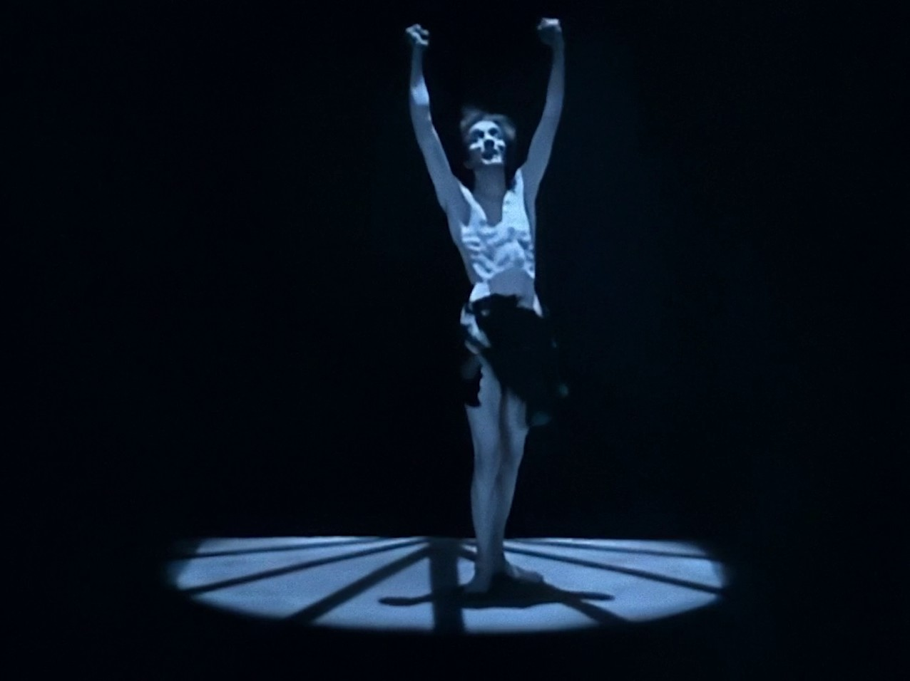

Salomé, frame at 42:14
Charles Bryant and Alla Nazimova · 1922 · Silent film, tinted in this copy (frame)
Free to use
For the dance of the seven veils, Natacha Rambova made a sheath-like tunic of white satin with a rubber lining, made specially by a manufacturer of automobile tires. The film was shot in January and February 1922, and the assistant cinematographer Paul Ivano recalled nights in the studio until four in the morning, with fifteen immense electric stoves heating the stage. It was a box-office flop, and Nazimova retired in 1925.